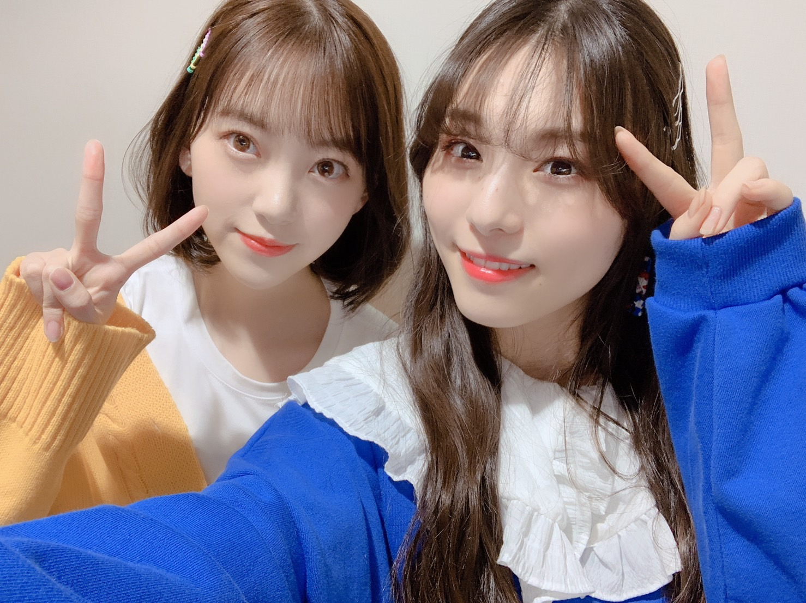
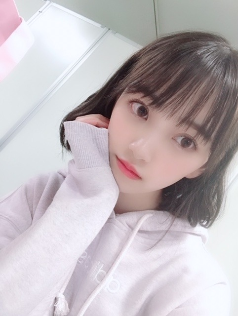

2019/0331Sun目玉焼き食べたくなるよね
ホットギミック オフショット〜✨
以前から憧れていて大好きな吉岡里帆さんと♪

2人だけで撮影させていただいたシーンもあり、緊張しましたが合間にお話しをしたり、笑顔が本当に可愛くて優しくて益々大好きになりました☺︎
また御一緒できるように私も頑張ります！
公式Twitter
公式Instagram
開設されました！
フォローよろしくです☺︎
そしてTGCありがとうございました〜！
歓声も凄く嬉しくてステージからうちわやボードもたくさん見えました✨✨
SONYUNARAさんの洋服、ポップで可愛かった〜
TWICEさんの東京ドームライブを前日に観に行っていたのもありステージ曲がTWICEさんだったので更にノリノリるんるんでした♪
(TWICEさんのライブ衣装ずっと可愛かった...)

久しぶりに伊織に会いました！！わ〜い
一緒のステージ立てて嬉しかったな！
メイクは今回も自分でしました〜
テーマは春オレンジなオルチャンメイク♡
(裏テーマは、ひよこさん)

まず肌は愛用ファンデーション...ipsaファウンデイションアルティメイトでマットに仕上げます
眉毛はペンシルで並行太眉に描いてからKATEの3DアイブロウカラーLB-2を塗ります(明るめ眉がかわいい)
そしてアイメイク
シャドウはとにかくラメ！！！
最近ライブとかで付けてるラメ感が最高なアイシャドウ...ホリカホリカ ピースマッチングシャドウFBE01
をまぶたの二重幅全体に指で塗ります
最近はグリッターラメが気になっています♡
ミナちゃんの東京ドームライブ1日目のピンクラメまぶたがお人形さんすぎてかわいすぎて...
マスカラは茶色で下まつげもしっかり塗ります
目尻の三角ゾーンにはDIORバックステージアイパレット001ウォームのMATTE OCHRE(1番下列の真ん中の色)を小さい筆で塗ります
その流れでうすーく涙袋ゾーンにも同じ色を塗って目の縦幅を広げます
チークはイニスフリーの18番です！
ラメ入りオレンジが日本人にも肌馴染みが良くてCLINIQUEとCHICCAのチークもお気に入りだけど最近はイニスフリーも使ってます☺︎
唇はSUQQUのモイスチャーリッチリップスティック07を塗った上からRMKリップジェリーグロス04をたっぷり塗って完成！
お仕事でもオフの日でもその日の服や髪型、天気、ブーム、気分でメイクを変えるのがすきです☺︎
女の子を目一杯楽しみたいし、おばあちゃんになっても日々"可愛くなる！"ことに貪欲に生きていくのがマイルールです✨
握手会やコメントでメイクについての質問をよくいただくのでいつか写真集やフォトブックを出させていただける時がありましたら色んな日のメイクやヘアアレンジをもっと詳しく紹介できたらいいなぁ〜


ではははは
2019/03/31 20:00


コメント(366)
TGC、握手会おつかれさまっ( ˶˙ᵕ˙˶ )
どちらも仕事で行けなくて残念だけど、
写真みたよ〜！
目元がめっちゃキラキラしてて
未央奈ちゃんがさらに美しく見えた！
いつも化粧品のメーカーも詳しく
ブログに載せてくれてありがとう！
参考にさせてもらってるよ︎☺︎！
いつもありがとう(⑉• •⑉)
ホットギミック楽しみだな〜♡
未央奈ちゃんほんとに可愛い！
使ったコスメ教えてくれるの
うれしいです(^-^)
ブログ読みながらアメトーークの堀ちゃんの絵を思い出してニヤッとしてもうた(汗)
可愛いですね♪
応援してます！
写真が全部かわいすぎます。
ホットギミック見ます!
これからも頑張ってねーo(^o^)o
目玉焼きが食べたくなるって気持ち、よく分かります。
ふとしたきっかけで、なったりします。
あと、ラピュタを観てると必ずなります。
堀さんに気を取られ、吉岡里帆さんとは気付きませんでした。
吉岡さんの笑顔は、素敵ですよね。
またご一緒出来るよう、頑張って欲しいです。
ホットギミックのTwitterとInstagramは、フォロー済です。
情報が楽しみで仕方ないです。
TGCは所々観てました、堀さんキラキラでしたよ。
春オレンジは素敵です、可愛いです。
流石のメイク力です、プロ並なのでは。
美への発信者としても写真集やフォトブック、実現して欲しいです。
その影響力が形となって欲しいです。
そのセンスは、活かされるべきかと。
写真が可愛いです、ありがとうございます。
そういえば、ザンビの最終回は衝撃的でした。
実乃梨さんがザンビになってしまったので、そらが一番ショックでしたが、人の心を持ったままの最期には救われました。
強い人でしたね、堀さんにピッタリの役でしたね。
はじめて東京行ってみたら？も面白かったです。
堀さん綺麗でした。
美味しいモノでも食べて、疲れをリフレッシュした下さいね。
頑張って行きましょう！
ブログ更新ありがとう
TGCお疲れ様～
伊織ちゃんと写真良かったね
衣装も髪型もメイクも
かわいいね
女子向けのブログも
大切にね
吉岡里帆ちゃんと2ショット
にやけてしまう(笑)
かわいい～
忙しいところ
更新大丈夫ですか？
体調第一でイイからね
伊織ちゃんと会えて良かったね！！
タイトルが目玉焼きであるアプリでめだまやきという名前を使わせていだいてるのですごく嬉しかった♪
これからどんどん情報解禁かな。
いおりちゃん綺麗になった。お茶目な
雰囲気は変わらないね。
みおなちゃんの髪型、毛先が内巻きで
可愛いです。髪留めも。
ゴルゴンゾーラ聴いたよ～。
アメリカのアイドルシーンを代表する
ような曲調のスタートから、後半は
乃木坂らしい憂いを帯びた明るい曲で
とても素敵です。
ゴルゴンゾーラという特徴ある食材を
比喩の中心に据えるって凄いです。
堀ちゃん今日も可愛い(^-^)
これからも応援してます
昨日のTGC 全国握手会お疲れ様でした。
だいちゅき！！
握手会行きたいな、
すきすきこれからも応援します！
どん兵衛のCMめっちゃいい感じ！！！
TGC楽しめたみたいだねー
伊織ちゃんと唇の色が似ている！！！
そうだね！
メイクは女の子の楽しみの一つだもんねー
写真集とかフォトブック出たら
堀ちゃん気合い入り過ぎて
何ページになるんだろうか？！笑
P.S.堀ちゃんadidas?の
パーカー着てるんだねー！
今日23枚目のシングルの発売日がアップされましたね。
可愛すぎる堀ちゃんの久々のセンター期待してます。
あと、テレ東の番組見ました。
なかなか感動できる内容でした。堀ちゃんの笑顔最高でした。
それとホットギミック楽しみにしてます。
お疲れ様。
未央奈めっちゃオシャレだから男だけど毎回ブログの写真見るの楽しみ！笑
伊織ちゃんと吉岡さんとのツーショット可愛すぎるね！昨日はTGC、今日は全握とものすごい大変だと思うからゆっくり休んでくださいね！23枚目の握手会個別も全握も行けるように、僕もがんばります！
握手会お疲れ様〜！
楽しかったよ〜！
待っててねー
いつも楽しみに見てるよー♪
未央奈ちゃん写真どれも可愛い
ホットギミック絶対見ますね！楽しみにしてまーす
体調に気をつけつつこれからも頑張ってください
応援してるよー！
ホットギミック公開されたら観に行きます！！
握手会早く行きたいな〜！！
大好きです！
相変わらず可愛いな～！
日々、美しさが進化してるよ！
体調に気を付けてね
んじゃね～！
ブログ更新たくさんしてくれてめっちゃ嬉しい！
23枚目シングルはみおちゃんが輝いてる姿をもっとみたいよー！
伊織との写真見たとき感動した
また頑張ってね！
TGCの衣装すっごい似合ってたよ！未央奈が着るとどんな服もより可愛くオシャレに見えるよwww未央奈は春っぽい衣装とかメイクがすごく似合ってる。すごく好き！もちろん他の衣装やメイクもねwww
最近未央奈がすごいオシャレに気を遣っててすごいなと思う事もあって僕もヘアセットをこの前からやって外出したりするようになりました。頑張ります。笑笑 女子は更にメイクもしなくちゃいけないと考えると…尊敬です！！これからも応援しています！
なんか文章を上手に締めくくれませんでした…笑笑
もっと綺麗な文章を書けるように努力します！！
あおば。
もう眩しい笑笑
TGCお疲れさま！
伊織ちゃんとまいちゅんと同じステージでよかったね☺︎
2期生最高！！
みおちゃん黄色も似合うね〜！
メイクにいつもこだわってるところも好き❤︎
最近みおちゃんに会えてなくて悲しい。。
メイク真似してみたいけど未うまく出来んのよな笑笑 TGCみおちゃんひよこさんだったのか笑笑 ひまわりだと思った笑笑
握手会行きたかったよー 早く会いたい！ホットギミック吉岡里帆さんと撮ったのか！共演できるなんてすごい！！絶対みにいく！
ももんが
可愛いね(ゝω・´★)
伊織ちゃんも可愛い‼️(^_^)／▼☆▼＼(^_^)
いつも可愛い未央奈ちゃんこんばんは。
TGC、握手会お疲れ様。
自分事ですが最近全然握手会に行けてません。
5月にシングルでるようなのでその時は気合入れます。
じゃあね。
実は僕も29日にTWICEのライブを友達に誘われて東京ドームに見に行きました！未央奈も来ていたなんてびっくりです！TWICEもすごいけど未央奈も十分すごいと思いますよ！
これからもっと忙しくなると思うけど頑張って、応援しています！
そして、いつも可愛い写真ありがとう❤️
早く写真集出して欲しいなー
北海道なので、なかなか会いに行くことはできませんが、遠いところからいつも応援してます❤️
4月17日発売のアルバム楽しみにしてます‼️
これからも体に気をつけて頑張って下さい❤️
今日は緊張してあんま話せなかったから次はもっと話します！！！！
大好きだよ〜〜〜〜！！！
吉岡さん綺麗ですよね。
って、嬉しそうな顔！(笑)
今回も行かれたんですね。
ご褒美。
伊織さんですと！
共演よかったですね。
ひよこだったか～～
新垣さんだったか～～
チキンだったか～～
きつねだったらね～～
尻尾振って欲しくない？(笑)
吉岡里帆さんとのツーショット可愛いです
今日の握手会ありがとう！幸せすぎた！
握手に行けなくなっても未央奈のことずっと応援する！大好き！私の元気の源だよ！ありがとう！
可愛い！
私も女の子なのでとっても参考になります！
私も未央奈ちゃんみたいに可愛くなれるようにメイクを楽しみながら頑張りたいと思います！(^^)
未央奈さん！明日はゆっくり休養したら、いいですよ！ 未央奈さんは、乃木坂の活動に加えてラジオに、映画の撮影、ブログに７５５‥と、ちょっと忙しすぎるのが、気掛かりです。
本当に休めるときは、しっかりと休んで下さいね☆彡
じゃあ、未央奈さん！今週末は、本当にお疲れ様〜でした☆彡☆彡☆彡 今夜は、早めに休んでネ❤️❤️❤️❤️❤️❤️❤️❤️❤️❤️❤️ 明日も未央奈さんにとって、幸せな１日になる事を願っています！
未央奈さん！今夜は、ブログを本当にありがとうございました！ m(_ _)m じゃあ、おやすみおな☆彡 風邪ひかないでね❤️❤️❤️❤️❤️❤️❤️❤️❤️❤️❤️❤️❤️❤️❤️❤️❤️❤️❤️❤️
( ´ ▽ ` )ﾉ よい休養をとってネ❤️❤️❤️
大阪での全握お疲れ様～(^o^)／
疲れただろうから、ゆっくり体を休めてね(^_^)
昨日のTGCは、生配信で見てたよ(^_^)
ちゃんと、みおなのランウェイを歩く姿も見れたよ＼(^o^)／
可愛かったな～(^_^)
今日放送の「乃木のの」で、曲名の紹介だけ、みおなが喋ってて驚いた！
みおなの声が聴けて嬉しかったよ＼(^o^)／
それじゃ、またね(^o^)／
そして今日の握手会めっちゃ楽しかったですありがとう！♡
ホットギミック絶対見るね〜！
TGCのメイクがめっちゃかわいくて、詳細知りたいなって思ってたから嬉しい( ; _ ; )
未央奈ちゃんの雰囲気にすごく合っててやっぱりかわいいを追求し続けてるんだなぁと尊敬、、！
未央奈ちゃんの2nd写真集、フォトブック見たい( ; _ ; )♡
これからも時々ブログとかでメイクとかヘアアレンジのこととか紹介してくれたら嬉しいです〜！
体調に気をつけてね！ またね〜！
吉岡さんと写真撮れて良かったね。
ランウェイの堀ちゃんとても可愛くて輝いてたよ。
コメントする